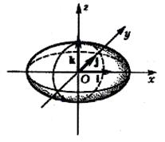

7.5.1. Эллипсоид

Эллипсоидом называется поверхность второго порядка с
каноническим уравнением
Каноническое
уравнение эллипсоида
.
Рассмотрим сечение эллипсоида плоскостью  . Линия пересечения эллипсоида и
плоскости задается системой уравнений:
. Линия пересечения эллипсоида и
плоскости задается системой уравнений:
. Линия пересечения эллипсоида и
плоскости задается системой уравнений:или
Очевидно, что линия пересечения – эллипс с полуосями  и
и  .
.
и .Рассмотрим сечение эллипсоида плоскостью . Линия пересечения задается системой
уравнений:
или
где
Таким образом, если ,
то сечение – эллипс с полуосями . Если , сечение – точка с координатами Если ,
система решений не имеет, т.е. исследуемая поверхность не имеет общих точек с
рассматриваемой плоскостью.
Аналогично рассматриваются сечения поверхности  плоскостями ,
.
плоскостями ,
.
плоскостями ,
.Величины называются
полуосями эллипсоида. Если все они различны, эллипсоид называется трехосным.
При равенстве двух полуосей получаются эллипсоиды вращения: при - вытянутый, при - сплющенный. Эти поверхности получаются
при вращении эллипса, соответственно, вокруг большой и малой оси.
Если , каноническое
уравнение принимает вид:
Каноническое
уравнение сферы
и задает сферу с центром в начале координат и
радиусом R.